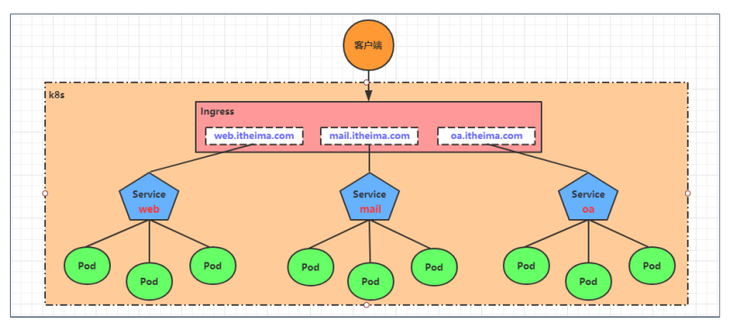
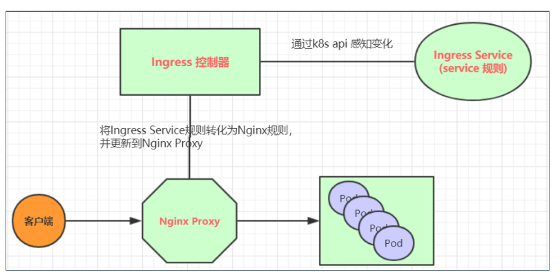

15.Kubernetes_Ingress
Kubernetes-Ingress
Service 对集群之外暴露服务的主要方式有两种：NotePort 和 LoadBalancer，但是这两种方式，都有一定的缺点：
NodePort 方式的缺点是会占用很多集群机器的端口，那么当集群服务变多的时候，这个缺点就愈发明显
LB 方式的缺点是每个service需要一个 LB，浪费、麻烦，并且需要 kubernetes 之外设备的支持
基于这种现状，kubernetes 提供了 Ingress 资源对象，Ingress 只需要一个 NodePort 或者一个 LB 就可以满足暴露多个Service的需求。

实际上，Ingress 相当于一个7层的负载均衡器，是 kubernetes 对反向代理的一个抽象，它的工作原理类似于 Nginx，可以理解成在 Ingress 里建立诸多映射规则，Ingress Controller 通过监听这些配置规则并转化成 Nginx 的反向代理配置 , 然后对外部提供服务。
七层负载均衡器：工作在 OSI 网络模型的应用层，主要基于 HTTP、HTTPS、FTP 等应用层协议进行负载均衡。它能够理解应用层协议的内容，根据具体的应用层信息（如 URL、域名、HTTP 头等）来分发请求。
ingress：kubernetes 中的一个对象，作用是定义请求如何转发到 service 的规则
ingress controller：具体实现反向代理及负载均衡的程序，对 ingress 定义的规则进行解析，根据配置的规则来实现请求转发，实现方式有很多，比如 Nginx, Contour, Haproxy 等等
Ingress（以Nginx为例）的工作原理如下：
用户编写 Ingress 规则，说明哪个域名对应 kubernetes 集群中的哪个 Service
Ingress 控制器动态感知 Ingress 服务规则的变化，然后生成一段对应的 Nginx 反向代理配置
Ingress 控制器会将生成的 Nginx 配置写入到一个运行着的 Nginx 服务中，并动态更新
到此为止，其实真正在工作的就是一个 Nginx 了，内部配置了用户定义的请求转发规则
